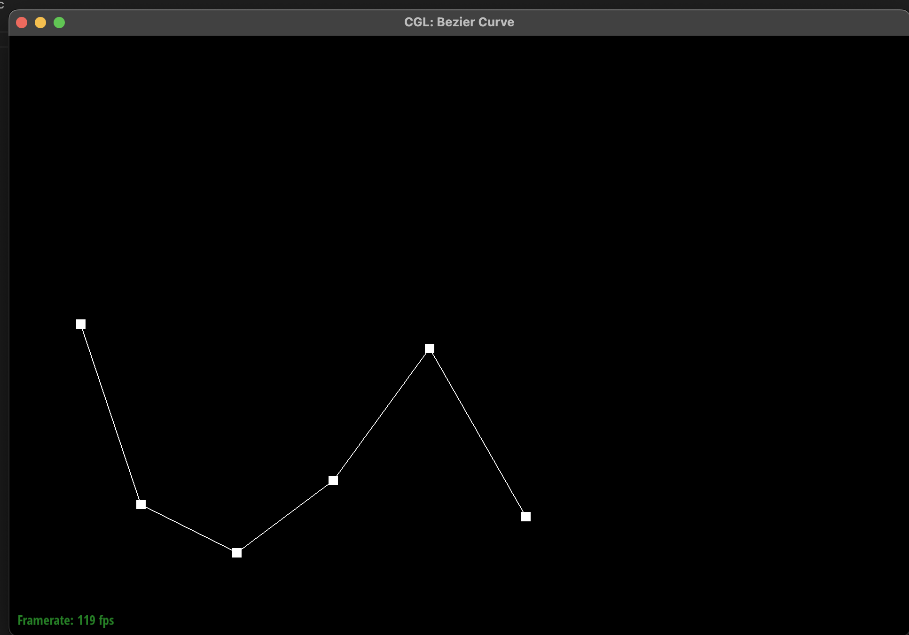
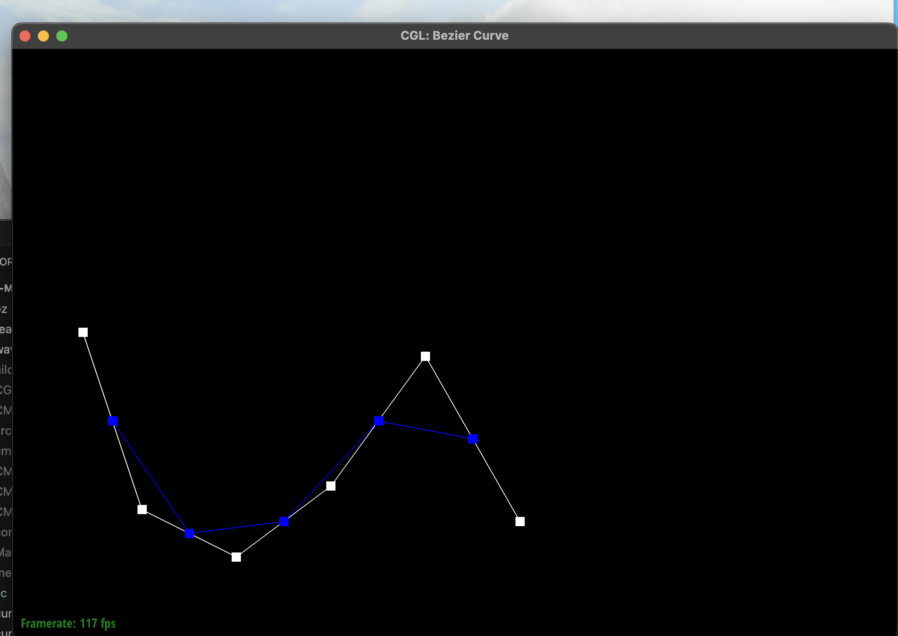
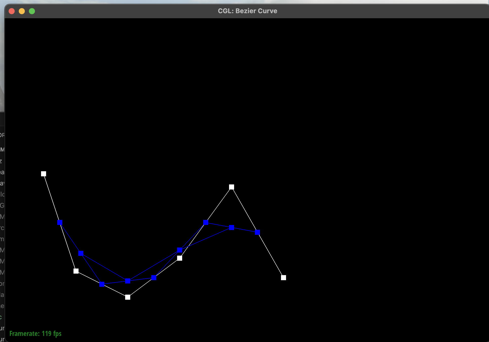
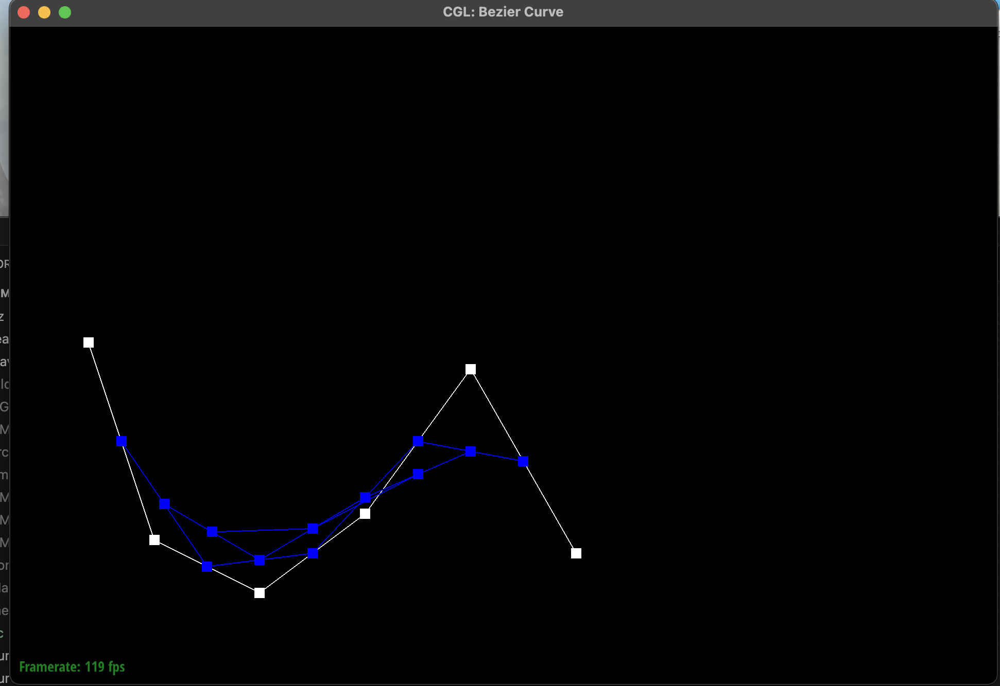
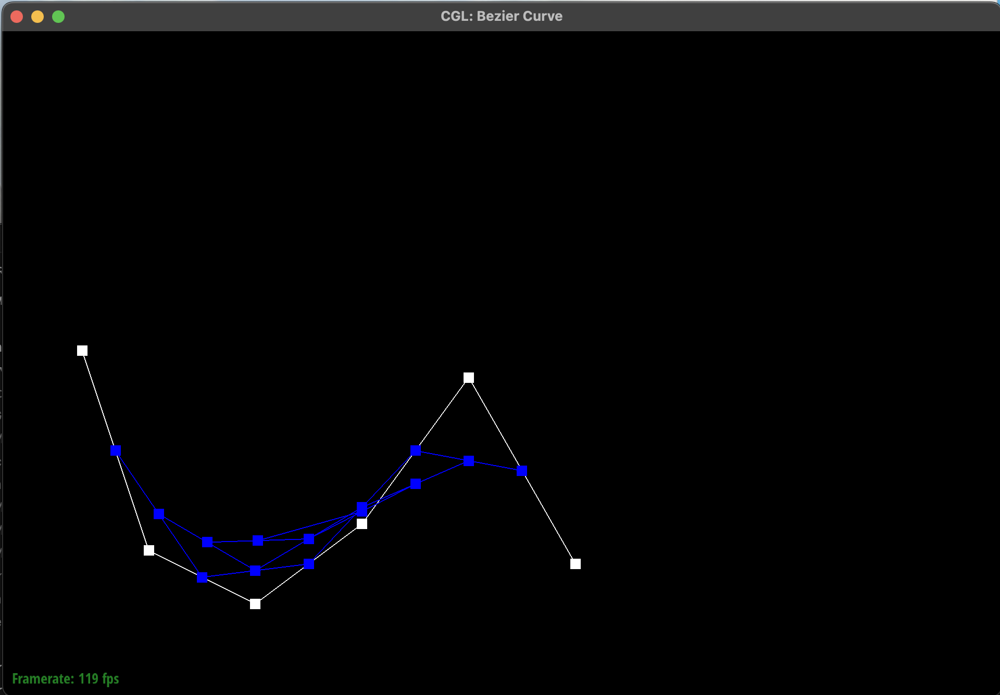
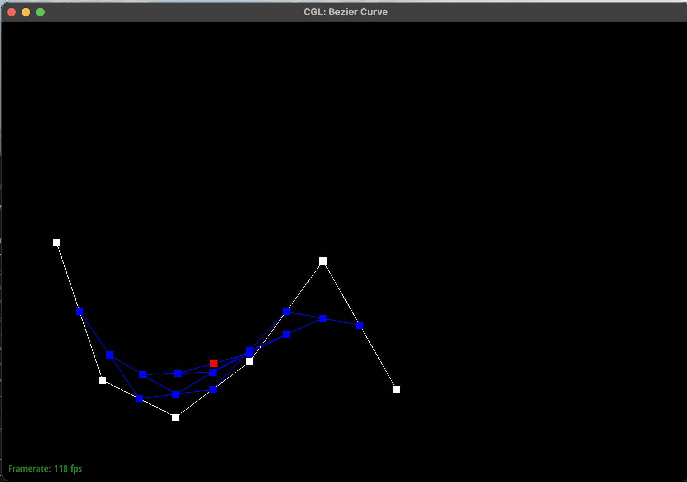
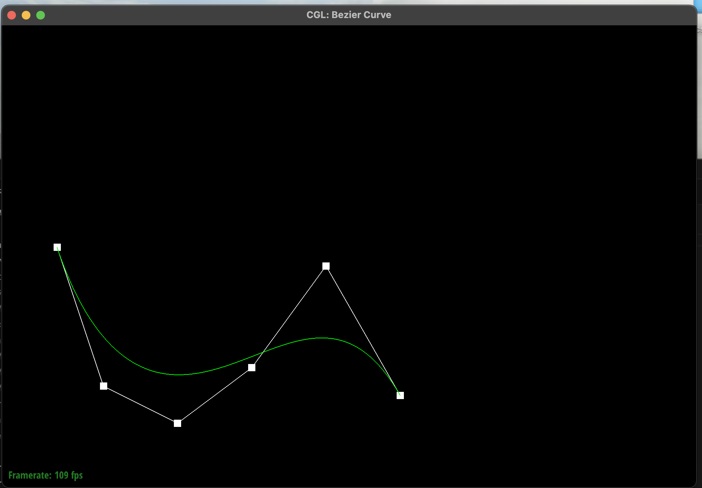
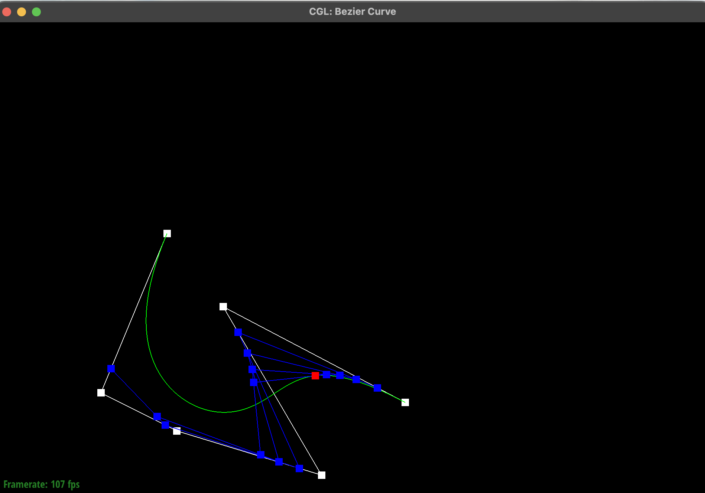
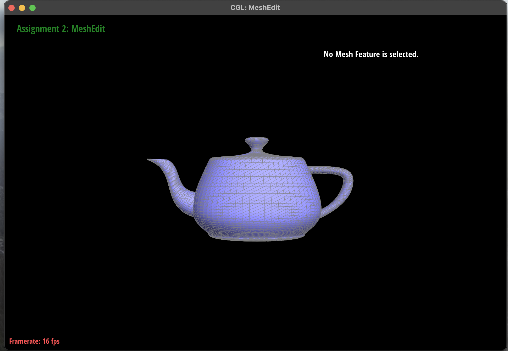

de Casteljau's algorithm is a recursive method used to evaluate points on a Bezier curve using linear interpolation between control points. A Bezier curve of degree n is defined by n+1 control points and a parameter t that ranges between 0 and 1. The algorithm works by repeatedly interpolating between consecutive control points until a single point remains.
Given a set of control points p₁, p₂, ..., pₙ and a parameter t, the algorithm computes intermediate control points using the linear interpolation formula:
p' = (1 − t)pᵢ + t pᵢ₊₁
This operation generates a new set of n−1 points. The same interpolation process is then applied recursively to these new points, producing smaller and smaller sets of points until only a single point remains. The final point is guaranteed to lie on the Bezier curve at parameter t. This recursive interpolation also visually illustrates how the curve is constructed from the original control points.
To implement this algorithm, I completed the function BezierCurve::evaluateStep(...).
This function performs one level of de Casteljau subdivision. It takes the current vector of points and generates a new vector of intermediate points by interpolating between each pair of adjacent points.
For each pair of points pᵢ and pᵢ₊₁, the function computes the interpolated point using the class member parameter t:
(1 − t)pᵢ + t pᵢ₊₁
These new interpolated points are stored in a new vector using push_back().
The resulting vector contains one fewer point than the input vector and represents the next level of the de Casteljau subdivision process.
When visualizing the curve in the meshedit viewer, pressing the E key repeatedly performs successive subdivision steps, showing the intermediate control points at each level.
Eventually, a single red point remains, which represents the evaluated point on the Bezier curve.
Pressing C toggles the display of the full Bezier curve that is generated from the control points.
To demonstrate the algorithm, I created my own Bezier curve using six control points.
Using the meshedit viewer, I stepped through the evaluation process by repeatedly pressing the E key, which performs one level of de Casteljau subdivision each time.
The screenshots below show the progression from the original control points to the final evaluated point on the curve.
Level 0: Original control points

Level 1: First interpolation step

Level 2: Second interpolation step

Level 3: Third interpolation step

Level 4: Fourth interpolation step

Level 5: Final evaluated point on the Bezier curve

Pressing the C key toggles the visualization of the full Bezier curve generated from the control points.
The green curve shown below represents the final Bezier curve constructed using the de Casteljau algorithm.

To further test the implementation, I moved several of the original control points by dragging them in the viewer.
I also modified the parameter t by scrolling on the trackpad.
Changing the control points alters the shape of the curve, while changing t moves the evaluated point along the curve.
The screenshot below shows a slightly different Bezier curve produced after modifying both the control points and the parameter value.

de Casteljau's algorithm can be extended from Bezier curves to Bezier surfaces by applying the same 1D interpolation process in two directions.
A Bezier surface is defined by an n × n grid of control points and two parameters, u and v.
To evaluate a point on the surface, I first treat each row of control points as a Bezier curve and evaluate it using the parameter u.
This produces one intermediate point for each row of the grid.
These resulting points form another Bezier curve in the perpendicular direction.
I then evaluate this new curve using the parameter v, which produces the final point on the Bezier surface corresponding to the parameters (u, v).
I implemented three functions to evaluate the Bezier surface.
The function evaluateStep(...) performs one interpolation step between adjacent control points using the parameter t.
The function evaluate1D(...) repeatedly applies this step until only one point remains, giving the final point on a Bezier curve.
Finally, the function evaluate(...) first evaluates each row of the control point grid at parameter u, producing a set of intermediate points.
These intermediate points are then evaluated again at parameter v to compute the final point on the Bezier surface.

The image above shows the Bezier surface generated by evaluating bez/teapot.bez using my implementation.